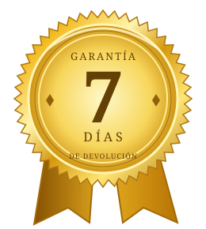

El silencio
Haz espacio para escucharte y llevar tus inquietudes a la oración.
¿Y si la puerta que buscas no estuviera afuera?
Explora las siete llaves de tu vida espiritual y comienza un camino de fe, discernimiento y propósito.
Desde US$ 9.90 · Pago único · Libro digital en español
Entre las expectativas, las prisas y las opiniones de los demás, es fácil dejar de escuchar tus propias preguntas.
Este libro te invita a hacer una pausa. A explorar tu relación con Dios, mirar tu historia con honestidad y dar un siguiente paso con intención.
Aquí, el «séptimo sentido» representa una forma más consciente de explorar tu interior. Cada llave combina reflexión espiritual, oración y una práctica personal.
Haz espacio para escucharte y llevar tus inquietudes a la oración.
Reflexiona sobre tus decisiones sin confundir cada coincidencia con una señal.
Explora quién eres más allá de las expectativas y la aprobación de los demás.
Encuentra un punto de apoyo espiritual cuando todavía no tienes respuestas.
Aborda las heridas del pasado sin renunciar a tus límites personales.
Conecta tus valores con pequeñas decisiones que sí puedes tomar hoy.
Convierte lo que descubres en un paso concreto. Tu camino continúa más allá de la última página.
«No necesitas tener todas las respuestas para dar un paso con propósito.»
Una lectura para detenerte, reflexionar y escribir. Sin prisas, sin exámenes y sin tener que demostrar nada.
Elegir mi edición →A veces, la primera puerta no se abre con una respuesta, sino con una pregunta honesta: ¿qué estoy evitando escuchar de mí mismo?
Dedica unos minutos a la oración. Después, escribe una inquietud que quieras explorar y una pequeña acción que puedas realizar hoy.
Ambas ediciones incluyen el libro y el Diario del Despertar. La Experiencia Completa añade otros tres materiales para profundizar tu práctica.
Preguntas, espacio para escribir y una guía para registrar tu recorrido interior.
Valor de referencia: US$ 9.90
Incluido en ambas ediciones
Un libro complementario de oraciones para acompañar distintos momentos de tu vida.
Valor de referencia: US$ 12.90
Solo en la Experiencia Completa
Una propuesta de lectura y reflexión para terminar el día con intención.
Valor de referencia: US$ 9.90
Solo en la Experiencia Completa
21 tarjetas con reflexiones y referencias bíblicas para volver a lo esencial.
Valor de referencia: US$ 7.90
Solo en la Experiencia Completa
Ejemplos ilustrativos de aplicación. No son testimonios de compradores ni resultados garantizados.
Reservar cinco minutos para orar y escribir una pregunta puede ser una forma sencilla de comenzar, incluso en una semana ocupada.
Práctica incluida en la primera llave.Antes de interpretar el silencio de alguien, separar lo que ocurrió de lo que imaginas y buscar una conversación clara.
Ejercicio incluido en la segunda llave.Vincular una lectura breve con tu rutina y registrar en el diario qué pudiste aplicar, sin exigirte perfección.
Práctica incluida en la séptima llave.Dos ediciones. Un solo pago. Sin suscripciones.
El libro principal y un diario para aplicar lo que descubres.
Un conjunto de lecturas y prácticas para acompañar tu vida espiritual.
Los valores tachados son referencias asignadas al contenido, no precios anteriores de venta.
Pago procesado por Stripe · Los métodos disponibles se muestran al pagar.
Recibirás materiales digitales. No incluye envío de un libro físico.

Si no es lo que esperabas, puedes solicitar la devolución dentro de los 7 días siguientes a tu compra. Responde al correo de entrega con tu número de pedido para iniciar la solicitud.
Consultar las condiciones de la garantía →Es la metáfora central del libro para explorar la conciencia, la fe y el discernimiento personal. No se presenta como un sentido biológico ni como una promesa de poderes sobrenaturales.
No. Es un libro digital en PDF, en español latino. Puedes leerlo en tu celular, tableta o computadora. No hay envío físico.
La Edición Esencial incluye el libro principal y el Diario del Despertar. La Experiencia Completa incluye ambos y añade Bajo Sus Alas, 7 Noches con los Salmos y Palabras de Luz.
Después de aprobarse el pago, serás dirigido a tu biblioteca para descargar los materiales de tu edición. El correo del pedido también puede incluir un enlace para recuperar el acceso. La compra de audios es opcional y no bloquea tus libros.
No. Es un pago único de US$ 9.90 o US$ 19.90, según la edición elegida. Los precios están expresados en dólares estadounidenses. Si tu tarjeta usa otra moneda, tu banco puede aplicar su tipo de cambio y comisiones.
No. La propuesta está pensada para una lectura personal, con lenguaje accesible y a tu ritmo. Su enfoque es espiritual y de inspiración cristiana.
Tienes 7 días desde la compra para solicitar una devolución respondiendo al correo de entrega e indicando tu número de pedido. Consulta los términos para más detalles.
Tu espacio. Tu ritmo. Tu camino espiritual.